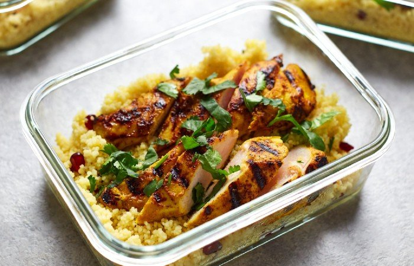

Spicy Chicken with Couscous

If you're anything like us, you might be struggling to get back into the
routine of normal waking hours and a diet that doesn't consist entirely of
cheese.
This spicy chicken recipe is bursting with flavour and is a simple way to
liven up plain old chicken and rice meal prep. It's ideal for making up on
a Sunday night to have you sorted for the week ahead — you'll be looking
forward to lunch, trust us.
Ingredients
- 1tbsp. curry paste
- 1tbsp. mango chutney
- ½ tsp. tumeric
- Salt to taste
- 50ml olive oil
- 4 chicken breast
- 300g couscous
- 350ml vegetable stock
Optional Extras
- Pomegranate Seeds
- Coriander
Creating the dish
- Firstly, make a marinade for your chicken by adding the curry paste, chutney, turmeric, salt and olive oil to a bowl and mixing well.
- Then, cut each chicken breast in half and add to the marinade, stirring until well covered, and then leave aside for at least 20 minutes — ideally in the fridge overnight.
- Next, heat a grill pan over medium heat and lay out your chicken pieces. Grill for 5-6 minutes on each side, or until golden and slightly charred.
- Meanwhile, place the couscous in a big bowl and carefully pour in the boiling vegetable stock. Cover the bowl with a lid and leave to soak for around 5 minutes, then fluff your couscous with a fork and add any extras you want — pomegranate seeds are great for a flash of colour and burst of flavour.
- Finally, divide your couscous into 4 containers, top with two pieces of marinated chicken and finish with a sprinkle of coriander.
Nutrional Facts (amount per serving)
| Calories |
284 |
| Total Fat |
3.7g |
| Total Carbohydrates |
22.2g |
| Protein |
50g |